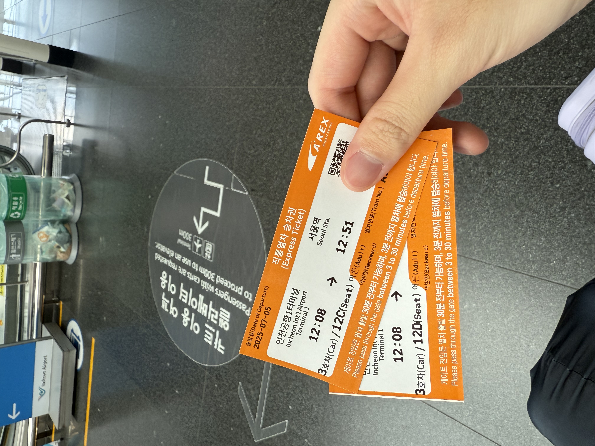
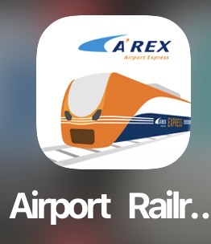
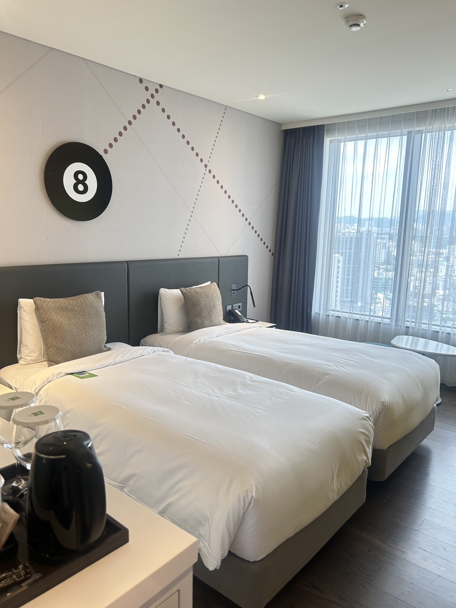
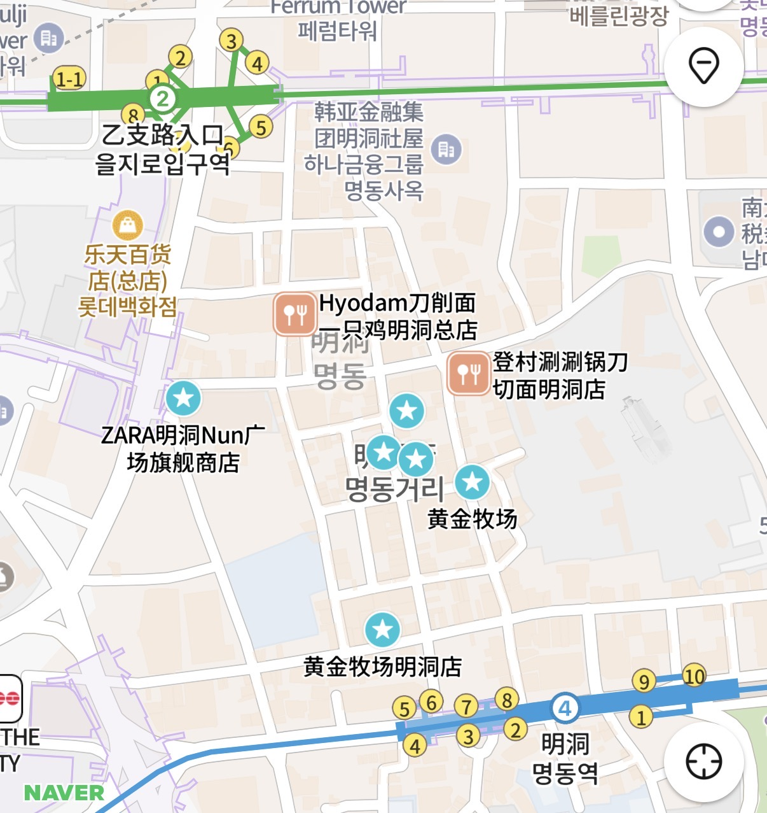
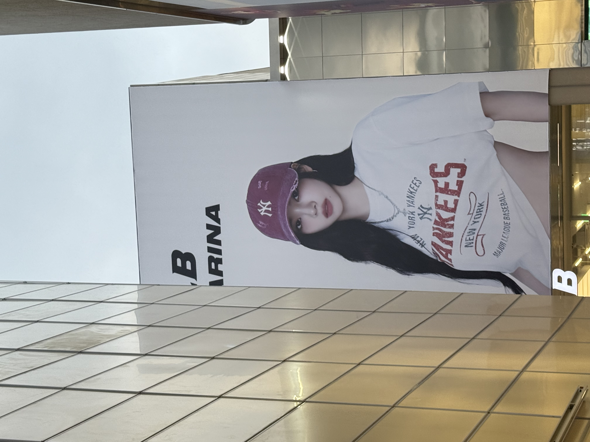
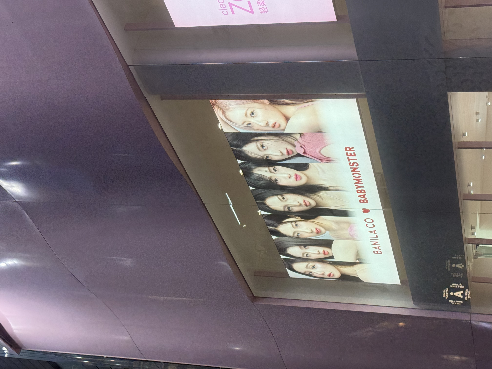
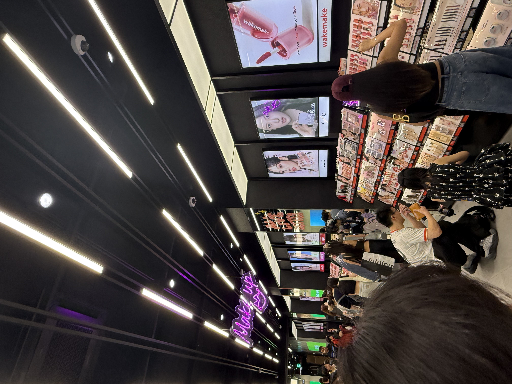
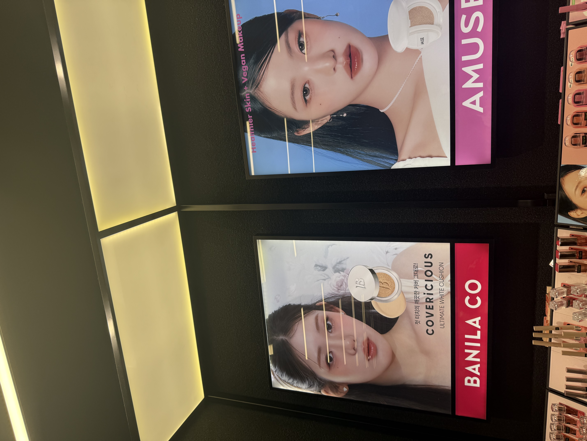
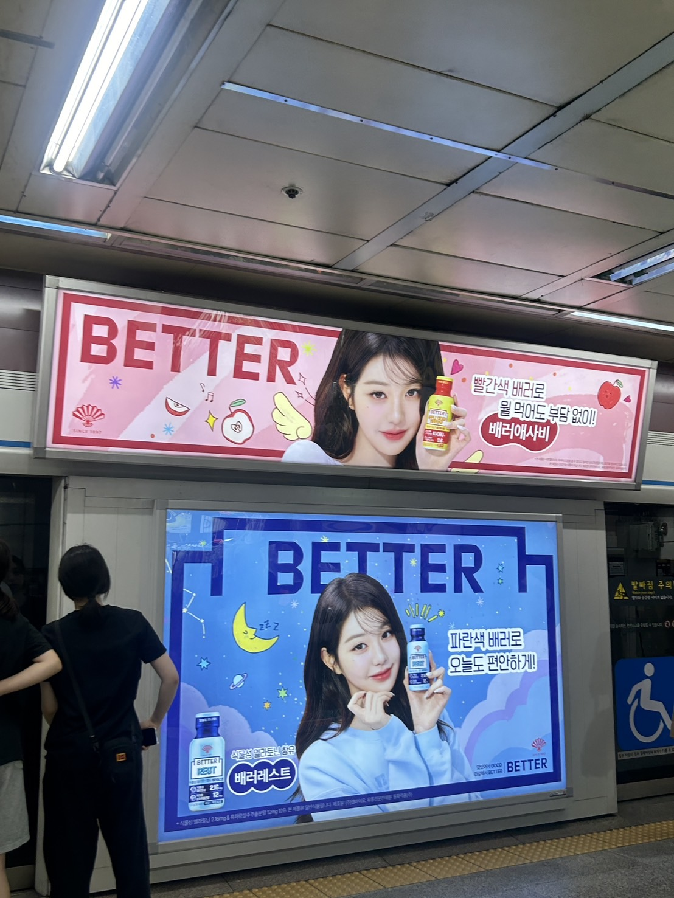

Day 1 (7/5): 抵達與明洞初探
搭長榮 BR140 從小港飛仁川，降落後先辦 SES 快速通關，出了海關第一件事就是找 AREX 月台。


→ 韓國旅遊必備 App 完整清單

43 分鐘後抵達首爾站，轉地鐵前往龍山 IBIS 飯店寄放行李，順手購買 Wowpass 和氣候同行卡備用，Check-in 後換件輕鬆的衣服。

📍 明洞：追星族的廣告看板天地

明洞對粉絲來說不只是購物街，更像一個戶外追星展場——MLB Korea 的 Karina 看板掛在街口，BANILA CO 玻璃帷幕貼滿 BABYMONSTER；走進 Olive Young 整面牆都是偶像廣告螢幕，張員瑛的臉從美妝架旁的燈箱一路跟到地鐵月台。 換錢這件事幾乎是邊走邊忘，因為根本走不快。





Day 2 (7/6): 景福宮與 BP 演唱會！
這天是整趟旅程的核心，但還有充裕的早晨可以用——先去景福宮附近走走，再轉往演唱會會場。
早上先領取演唱會套票，接著搭地鐵到景福宮站晃了一圈，順路在通仁市場買了幾樣小吃解決午餐。 下午搭地鐵一路搖到大化站，轉接駁車前往高陽體育園區，現場領票、完成面交，然後等待那一刻的到來。
Day 3 (7/7): 弘大、YG 與汝矣島
換飯店日，從龍山 IBIS Check out，把行李寄放到東大門 IBC 後，展開一整天的市區移動。
弘大一帶逛了不少，街邊小攤、獨立品牌和韓妝店輪番轟炸錢包，午餐也在這裡解決。 吃完直奔合井站——YG 娛樂公司就在附近，特地繞過去拍了照，雖然只是一棟辦公樓，但粉絲朝聖的儀式感很重要。 傍晚去汝矣島現代百貨逛了一圈，接著回新設洞站辦理 IBC 飯店入住。
Day 4 (7/8): 市場、聖水洞與圖書館
傳統市場、韓系設計街區、網紅圖書館，三種完全不同的氛圍全塞進一天。
早上先去鍾路五街廣藏市場，綠豆煎餅、麻藥飯捲、生牛肉全都吃了一遍，吃到撐才依依不捨離開。 中午移動到聖水站，這裡是首爾近年最熱門的新興區域，各種選品店和咖啡廳沿著工業感街道排開，逛起來很有質感。 下午去三成站的 COEX 星空圖書館，書牆包圍的那種壓迫感和震撼感，照片根本拍不出來，只能親眼感受。
Day 5 (7/9): 韓屋、大學與布帳馬車
倒數第二天，用最韓國的方式走完——傳統韓屋、大學街區、路邊攤一條龍。
上午從安國站開始，北村韓屋村的窄巷很適合慢慢走，三清洞和仁寺洞接連逛過去，傳統工藝品、茶屋和小藝廊穿插其中。 下午轉到新村，延世大學的正門廣場很氣派，梨花女大的玻璃建築也很值得一看，附近奶茶店和輕食隨手可得。
Day 6 (7/10): 歸途
最後一天，Check out IBC 東大門，帶著滿滿的戰利品和回憶出發往仁川機場。
搭 AREX 回機場，長榮 BR171 飛回高雄小港，降落的那一刻回頭看這六天，覺得每一分鐘都花得很值。
行李清單
這次旅行準備的物品清單：
- 護照、身分證 (正本+影本)、證件照*2
- 個人衣物、襪子 (5天份)
- 個人藥品
- 洗漱與保養用品 (牙刷、洗面乳、毛巾等)、化妝品、防曬乳
- 雨傘、輕便雨衣 (因應雨季)
- 行動電源 (手提行李)
- 貨幣 (台幣、韓元)
- 信用卡與簽帳金融卡
- 轉接頭、萬國插座
- 充電線
- 購物袋、夾鏈袋
- 防疫用品 (口罩、酒精、衛生紙)
- 隱形眼鏡
- 購票證明影印 (機票+演唱會票)
- BLACKPINK 手燈
- 熱情的心以及耐心
心得總結
在這裡寫下你對這次旅行的整體感想、有趣的事、或是給未來想去的人的建議等等。